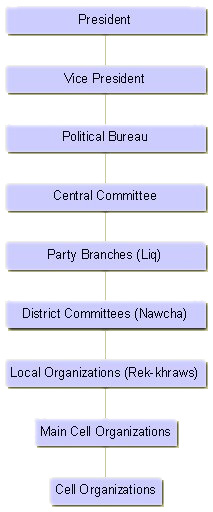

The structure and party administration is divided into regions or branches known as “liq”, districts as “nawcha”, local organisations as “rek-khraw” and cells as “shana”. Eack liq is subdivided into nawchas; nawchas into rek-khraws and rek-khraws into shanas.
1st Baranch – Dohuk region
2nd Branch – Arbil
3rd Branch – Kerkuk
4th Branch – Sulaimania
5th Branch – Formerly Baghdad
6th Branch – Europe (based in London)
7th Branch – Northern America (based in Washington D.C.)
8th Branch – Iran
9th Branch – Aqra
10th Branch – Soran (Rwanduz region)
11th Branch – Rania/Qala Diza
12th Branch – Halabja
Members of Political Bureau or Central Committee head each branch. Other members are elected at branch and district conferences.
In order to become a delegate member for the Party's General Congress, any party member is entitled to become a candidate at a local or regional level elections.
